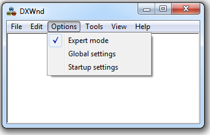
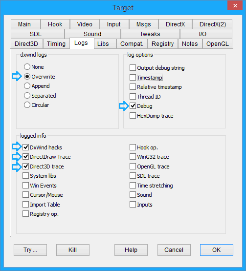
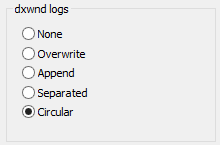
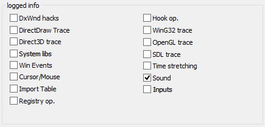

Preface:
Though DxWnd is developed trying to make its use as easy and reliable as possible, in reality the variety of platforms, game engines, game releases and configurations make each case a real challenge and it will happen quite often that things won't be ok at first attempt. Because of the complexity of the task, the help provided by log files is really precious, and even though they might be really obscure for most DxWnd users, they can be grabbed and posted to the DxWnd forum to get some help. The following explains how to do this.
Setting up the tool:
DxWnd logs can be activated from the DxWnd interface in expert mode. So, if not already done, click on Options->Expert mode

Then, the program configuration will show the "Logs tab" where the flags for logging options can be set. In most cases the optimal configuration will be the one shown here:

Log production:
The logs are written in the dxwnd.log file located in the game folder (if that folder is writable, when not possible the dxwnd.log file will be written elsewhere) while the game is running. So, once configured, run the game and look for the dxwnd.log file.
Since logs could be very verbose and write huge quantity of text, it is advisable to run the game for as little time as possible, interrupting the game session as soon as the problem occurs. Then, the log size can be reduced by file compression: the log is quite repetitive and compression rate is usually very high. Please, do not add more flags if not asked: that would easily generate more useless text making it more difficult to read and understand.
Special cases:
When hunting an occasional bug it may be inconvenient to get huge logs during the long time it takes until the problem occurs. In this situation it is possible to write the logs in a "circular" mode: in this case, two log files will be created and periodically swapped and overwritten, so that their size is trimmed to a maximum value. In this case it is necessary to collect and send both log files (named dxwnd.log and dxwnd.0.log).

If there are problems with the audio cd emulation, it is usually useless to grab informations about anything but the audio operations. In this case you should set only the "Sound" flag.
